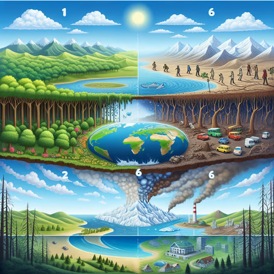
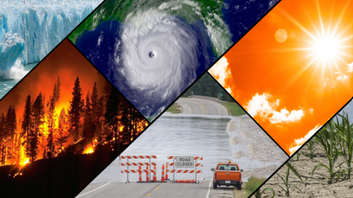
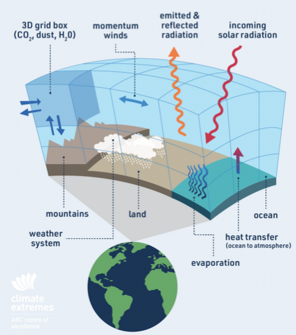

Le Changement Climatique et les Modèles de Prévision
Le changement climatique modifie les conditions météorologiques mondiales, ce qui complique la tâche des météorologues pour effectuer des prévisions précises à long terme. L'augmentation des températures, des phénomènes climatiques extrêmes et des changements dans les courants atmosphériques affectent la fiabilité des modèles météorologiques traditionnels.
Les Phénomènes Climatiques Extrêmes
Les événements météorologiques extrêmes tels que les vagues de chaleur, les tempêtes plus puissantes, et les sécheresses prolongées deviennent de plus en plus fréquents à cause du réchauffement global. Ces changements rendent les prévisions à long terme plus incertaines, car ils nécessitent des modèles adaptés aux nouvelles réalités climatiques.
Les Défis des Modèles à Long Terme
Les modèles climatiques doivent prendre en compte non seulement les facteurs atmosphériques, mais aussi l'impact des activités humaines, telles que l'industrialisation et la déforestation. Ces facteurs ajoutent une complexité supplémentaire aux prévisions météorologiques, car ils changent rapidement, affectant l'évolution des conditions climatiques à long terme.